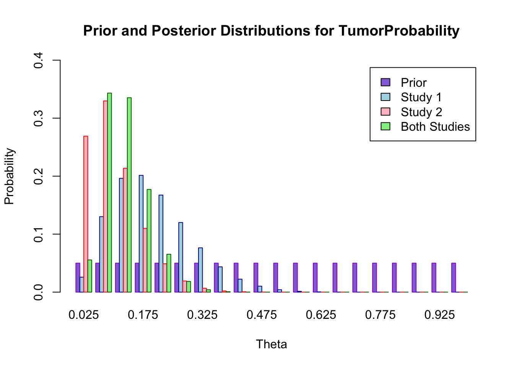

Exercise 1 (Two Gambles) In an experiment, subjects were given the choice between two gambles:
Experiment 1
Gamble \({\cal G}_A\)
Gamble \({\cal G}_B\)
Win
Chance
Win
Chance
$2500
0.33
$2400
1
$2400
0.66
$0
0.01
Suppose that a person is an expected utility maximizer. Set the utility scale so that u($0) = 0 and u($2500) = 1. person is an expected utility maximizer. Set the utility scale so that u($0) = 0 and u($2500) = 1. Whether a utility maximizing person would choose Option A or Option B depends on the person’s utility for $2400. For what values of u($2400) would a rational person choose Option A? For what values would a rational person choose Option B?
Experiment 2
Gamble \({\cal G}_C\)
Gamble \({\cal G}_D\)
Win
Chance
Win
Chance
$2500
0.33
$2400
0.34
$0
0.67
$0
0.66
For what values of u($2400) would a person choose Option C? For what values would a person choose Option D? Explain why no expected utility maximizer would prefer B and C.
This problem is a version of the famous Allais paradox, named after the prominent critic of subjective expected utility theory who first presented it. Kahneman and Tversky found that 82% of subjects preferred B over A, and 83% preferred C over D. Explain why no expected utility maximizer would prefer both B in Gamble 1 and C in Gamble 2. (A utility maximizer might prefer B in Gamble 1. A different utility maximizer might prefer C in Gamble 2. But the same utility maximizer would not prefer both B in Gamble 1 and C in Gamble
Discuss these results. Why do you think many people prefer B in Gamble 1 and C in Gamble 2? Do you think this is reasonable even if it does not conform to expected utility theory?
Solution:
Define x = u($2400), the utility of $2400.
For A versus B:
Expected utility of A is 0.33* (1) + 0.66(x) + 0.1(0)
Expected utility of B is x
Setting them equal and solving for x tells us the value of x for which an expected utility maximizer would be indifferent between the two options \[0.33* (1) + 0.66*(x) + 0.1*(0) = x\]\[x = 0.33/0.34.\]
For C versus D:
Expected utility of C is 0.33* (1) + 0.67*(0)
Expected utility of D is 0.34*(x)
Setting them equal and solving for x tells us the value of x for which an expected utility maximizer would be indifferent between the two options \[0.33* (1) = 0.34*(x)\]\[x = 0.33/0.34\]
If x < 33/34, then an expected utility maximizer would choose option C. If x>33/34, option D an expected utility maximizer would choose option D
Why no utility maximizer would prefer B and C?
A utility maximizer would pick B if x>33/34, and would pick C if x<33/34. These regions do not overlap. By definition, an expected utility maximizer has a consistent utility value for a given payout regardless of the probability structure. Therefore, no utility maximizer would prefer B and C. A utility maximizer would be indifferent among all four of these gambles if x = 33/34. But no utility maximizer would strictly prefer B over A, and C over D.
Many people’s choices violate subjective expected utility theory in this problem. In fact, Allais carefully crafted this problem to exploit what Kahneman and Tversky called the “certainty effect.” In the choice of A vs B, many prefer a sure gain to a small chance of no gain. On the other hand, in the choice of C vs D, there is no certainty, and so people are willing to reduce their chances of winning by what feels like a small amount to give themselves a chance to win a larger amount. When given an explanation for why these choices are inconsistent with “economic rationality,” some people say they made an error and revise their choices, but others stand firmly by their choices and reject expected utility theory.
It is also interesting to look at how people respond to a third choice:
Experiment 3:
This is a two-stage problem. In the first stage there is a 66% chance you will win nothing and quit. There is a 34% chance you will go on to the second stage. In the second stage you may choose between the following two options.
Gamble
Payout
Probability
E
$2500
33/34
E
$0
1/34
F
$2400
1
F
$0
1/34
Experiment 3 is mathematically equivalent to Experiment 2. That is, the probability distributions of the outcomes for E and C are the same, and the probability distributions of the outcomes for F and D are the same. In experiments, the most common pattern of choices on these problems is to prefer B, C, and F. There is an enormous literature on the Allais paradox and related ways in which people systematically violate the principles of expected utility theory. For more information see Wikipedia on Allais paradox.
Exercise 2 (Tarone Study)Tarone (1982) reports data from 71 studies on tumor incidence in rats
In one of the studies, 2 out of 13 rats had tumors. Assume there are 20 possible tumor probabilities: \(0.025, 0.075,\ldots, 0.975\). Assume that the tumor probability is uniformly distributed. Find the posterior distribution for the tumor probability given the data for this study.
Repeat Part a for a second study in which 1 in 18 rats had a tumor.
Parts a and b assumed that each study had a different tumor probability, and that these tumor probabilities were uniformly distributed a priori. Now, assume the tumor probabilities are the same for the two studies, and that this probability has a uniform prior distribution. Find the posterior distribution for the common tumor probability given the combined results from the two studies.
Compare the three distributions for Parts a, b, and c. Comment on your results.
Solution:
We assume that tumors occur independently, with a probability of \(\Theta\) of a tumor in each rat in the study. Our data \(X\) consist of observations on \(N\) rats, in which we record which rats have tumors. We can use either of two methods to represent the likelihood of what we have observed:
Method 1: We list, for each observation, whether or not the rat has a tumor. We multiply together the probability of getting the observation we obtained: \(\Theta\) if the rat has a tumor, and 1-\(\Theta\) if the rat does not have a tumor. If x out of n rats have tumors, the probability of observing this sequence of observations is \(\Theta^k(1-\Theta)^{n-k}\). Using Method 1, the posterior distribution for \(\Theta\) is given by: \[
g (\theta | x ) = \dfrac{f ( x | \theta ) g (\theta )}{\sum_{i=1}^{20} f ( x | \theta_i ) g (\theta_i )} = \dfrac{\theta^x (1 − \theta )^{n- x}}{\sum_{i=1}^{20} \theta_i^x (1 − \theta_i )^{n − x}}
\]
Method 2: We count how many of the rats have tumors. We remember from our previous statistics class that if the tumors occur independently with probability \(\Theta\), the number of rats with tumors out of a total of \(n\) rats will have a Binomial distribution with parameters \(n\) and \(\Theta\). The probability of getting \(k\) tumors is \[
C_n^k \theta^k (1 − \theta )^{n − k},\quad k = 0, 1, 2, ..., n,\quad \mathrm{where}\quad C_n^k = \dfrac{n!}{k!(n-k)!}
\] Then, the posterior distribution for \(\Theta\) is given by: \[
g (\theta | x ) = \dfrac{f ( x | \theta ) g (\theta )}{\sum_{i=1}^{20} f ( x | \theta_i ) g (\theta_i )} = \dfrac{C_n^k \theta^x (1 − \theta )^{n − x}}{\sum_{i=1}^{20} C_n^k \theta_i^x (1 − \theta_i )^{n − x}}
\]
In Method 1, we are representing the likelihood of getting this exact sequence of observations. In Method 2, we are representing the likelihood of getting this number of tumors.
It is clear that the two methods give the same posterior distribution, because the constant \(C_n^k\) cancels out of the numerator and denominator of Bayes rule. That is, the number of tumors is a sufficient statistic for \(\Theta\), and the order in which the tumors occur is irrelevant.
Part a. The posterior distribution for \(\Theta_1\), the tumor probability in the first study, is: \[
g (\theta | x =2) = \dfrac{\theta^2 (1 − \theta )^{11}}{\sum_{i=1}^{20} \theta_i^2 (1 − \theta_i )^{11}}
\]
Part b. The posterior distribution for \(\Theta_2\), the tumor probability in the second study, is: \[
g (\theta | x =2) = \dfrac{\theta (1 − \theta )^{17}}{\sum_{i=1}^{20} \theta_i(1 − \theta_i )^{17}}
\]
Part c. If the tumor probabilities are the same in the two studies, it is appropriate to treat them as a single study in which 3 rats out of 31 have a tumor. The posterior distribution for \(\Theta\), the common tumor probability, is: \[
g (\theta | x =2) = \dfrac{\theta^3 (1 − \theta )^{28}}{\sum_{i=1}^{20} \theta_i^3(1 − \theta_i )^{28}}
\]
It is useful to verify that we get the same posterior distribution by using Method 2 to calculate the likelihood of the data. It is also useful to verify that we would get the same results in Part c if we used the posterior distribution from Part a as the prior distribution for Part c, and the likelihood from Part b as the likelihood for part c. That is, we would get the same result from a two-step process, in which we started with a uniform prior distribution, incorporated the results from the first study to obtain a posterior distribution, and then incorporated the results from the second study to get a new posterior distribution.
Part d. We can compare the distributions more easily if we plot the prior distribution, the posterior distributions for the parameters of the two individual studies, and the combined posterior distribution together (see below). We see that the posterior distribution from the first study puts more probability on higher values of \(\Theta\) than the posterior distribution for the second study. This is not surprising, because a higher proportion of rats in the first study had tumors. There is a great deal of overlap in the two distributions, which suggests that the two probabilities may be the same. Thus, it is reasonable to consider combining the two samples. If there had been very little overlap in the posterior distributions from Parts a and b, it would not have been reasonable to combine the studies. Later in the semester, we will look more carefully at the problem of when to combine probabilities and when to estimate them separately. When the studies are combined, the posterior distribution is narrower than the posterior distribution for either of the two individual studies, with less probability on very low and very high values of \(\Theta\). Note that the combined distribution is consistent with both of the individual distributions, in the sense that it places high probability on values that also have high probability in the other two distributions. The combined distribution is more concentrated around values close to the combined sample proportion of about 1 in 10.
allDist=rbind(prior,posta,postb,postc) barplot(allDist,main="Prior and Posterior Distributions for TumorProbability",xlab="Theta",ylab="Probability", col=c("mediumpurple","lightblue","pink","lightgreen"), border=c("darkviolet","darkblue", "red","darkgreen"),names.arg=theta, legend=c("Prior","Study 1", "Study 2", "Both Studies"), beside=TRUE, ylim=c(0,0.4))

Exercise 3 (Poisson MLE vs Baye) You are developing tools for monitoring number of advertisemnt clicks on a website. You have observed the following data:
y =c(4,1,3,4,3,2,7,3,4,6,5,5,3,2,4,5,4,7,5,2)
which represents the number of clicks every minute over the last 10 minutes. You assume that the number of clicks per minute follows a Poisson distribution with parameter \(\lambda\).
Plot likelihood function for \(\lambda\).
Estimate \(\lambda\) using Maximum Likelihood Estimation (MLE). MLE is the value of \(\lambda\) that maximizes the likelihood function or log-likelihood function. Maximizing likelihood is equivalent to maximizing the log-likelihood function (log is a monotonically increasing function).
Using barplot, plot the predicted vs observed probabilities of for number of clicks from 1 to 7. Is the model a good fit?
Assume that you know, that historically, the average number of clicks per minute is 4 and variance is also 4. Those numbers were valculated over a long period of time. You can use this information as a prior. Assume that the prior distribution is \(Gamma(\alpha,\beta)\). What would be appropriate values for \(\alpha\) and \(\beta\) that would represent this prior information?
Find the posterior distribution for \(\lambda\) and calculate the Bayesian estimate for \(\lambda\) as the expectation over the posterior.
After collecting data for a few days, you realized that about 20% of the observations are zero. How this information would change your prior distribution? This is an open-ended question.
Hint: For part c, you can use the following code to calculate the predicted probabilities for the number of clicks from 0 to 5.
Warning in optim(par = 1, fn = function(l) -sum(dpois(y, l, log = TRUE))): one-dimensional optimization by Nelder-Mead is unreliable:
use "Brent" or optimize() directly
lambda_mle
[1] 4
Alternatively, the likelihood function is \[
L(\lambda) = \prod_{i=1}^{n} \frac{\lambda^{y_i}e^{-\lambda}}{y_i!}
\] and the log-likelihood function is \[
\log L(\lambda) = \sum_{i=1}^{n} y_i \log(\lambda) - n\lambda
\] The MLE is the value of \(\lambda\) that maximizes the log-likelihood function. We can find the MLE by taking the derivative of the log-likelihood function with respect to \(\lambda\) and setting it equal to zero. This gives \[
\frac{d}{d\lambda} \log L(\lambda) = \frac{1}{\lambda} \sum_{i=1}^{n} y_i - n = 0
\] Solving for \(\lambda\) gives \[
\lambda = \frac{1}{n} \sum_{i=1}^{n} y_i.
\] A simple average of the data gives the MLE for \(\lambda\).
We know that \(E(X) = \alpha/\beta = 4\) and \(Var(X) = \alpha/\beta^2 = 4\). For example, \(\alpha = 4\) and \(\beta = 1\) would match the historical data.
We can use a mixture prior with one component concentrated around zero and another component concentrated around the mean that is calculated by removing zeroes from the data. The component weights are 0.2 and 0.8 respectively.
Exercise 4 (Exponential Distribution) Let \(x_1, x_2,\ldots, x_N\) be an independent sample from the exponential distribution with density \(p (x | \lambda) = \lambda\exp (-\lambda x)\), \(x \ge 0\), \(\lambda> 0\). Find the maximum likelihood estimate \(\lambda_{\text{ML}}\). Choose the conjugate prior distribution \(p (\lambda)\), and find the posterior distribution \(p (\lambda | x_1,\ldots, x_N)\) and calculate the Bayesian estimate for \(\lambda\) as the expectation over the posterior.
References
Tarone, Robert E. 1982. “The Use of Historical Control Information in Testing for a Trend in Proportions.”Biometrics, 215–20.